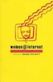

پذيرش > سایت نوشته ها > نقش رسانههای سایبری در توانمندسازی جنبش زنان


 نقش رسانههای سایبری در توانمندسازی جنبش زنان نقش رسانههای سایبری در توانمندسازی جنبش زنان
13 تیر 1390 - میترا فخیم - نسخه قابل چاپ
پخش مستقیم بیست و دومین سمیناربنیاد پژوهشها از طریق اینترنت امکان داد آن دسته از علاقمندان به مباحث جنبش زنان که در سمینار حضور نداشتند نیز بتوانند سخنرانیها و بحثها را دنبال کنند.
میزگرد صبح روز یکشنبه سمینار «نقش رسانههای سایبری در توانمندسازی جنبش زنان» نام داشت. هر سه شرکت کننده در این میزگرد جوانانی بودند که پس از انقلاب متولد شدهاند: کیانا کریمی از آمریکا، علی هنری از هلند و عشا مومنی از آمریکا.
اینترنت و گفتمان برابری خواهانه جنبش زنان
این بحث را علی هنری ارائه داد که دانشجوی دوره کارشناسی ارشد جامعه شناسی در دانشگاه خرونینگن در شمال شرقی هلند است.
چکیده بحث علی هنری این بود که در جوامع بستهای مانند ایران فعالیت اجتماعی هزینه بالایی دارد از این رو باید از روشهای کم خطر و کم هزینه استفاده کرد. اینترنت میتواند نقش مهمی در خبر رسانی، معنا سازی، گفتگوی اغنایی و تسهیل روند مشارکت در حرکتها ایجاد کند و سبب میشود بار اصلی فعالیتها (و هزینهها) بر دوش هسته اصلی فعالان جنبش زنان قرار نگیرد.
وی در پلمیک با این ایده که فعالیت اینترنتی فعالیتی مجازی است گفت اینترنت سبب ارتباط گرفتن با افرادی میشود که در دنیای واقعی امکان تماس با آنها وجود ندارد و به فعالان اجازه میدهد جامعه را بیشتر بشناسند. کنشهایی که در اینترنت میبینیم مجازی نیست، مابهازای واقعی دارد.
او به تحقیقی اسنتاد کرد که در سال 1387 در رابطه با دستیابی به اینترنت و تفکیک کاربران اینترنت در ایران انجام شده است. بنا بر این تحقیق نزدیک به 90 درصد کاربران اینترنت کمتر از 30 سال دارند. بیش از 90 درصد شهرنشین اند و 55 درصد دارای تحصیلات عالیاند.
امکان دسترسی اینترنت به شهرنشینان جوان تحصیل کرده امکان را میدهد آنها موقعیت فردی و شغلی خود را بهبود بخشند و این امر شکاف میان آنان را با بخش عمدهای از افراد جامعه که بیشتر از نابرابری (جنسیتی) رنج میبرند و به اینترنت دسترسی ندارند، افزایش میدهد. این امر با گفتمان برابری خواهانه جنبش زنان مغایرت دارد. از این رو شعار محوری جنبش زنان میتواند دستیابی بیشتر به اینترنت برای رفع نابرابری باشد.
بهینه سازی استفاده از اینترنت در جنبش زنان
کیانا کریمی گرافیست و طراح وب ساکن کالیفرنیا تاکید کرد بحث او با عنوان بهینه سازی استفاده از اینترنت در جنبش زنان بر پایه تجربیات و مشاهدات فردیاش بعنوان فعال جنبش زنان است.
وی گفت اینترنت برای جنبش زنان که با «سرکوب، مشکلات امنیتی و پراکندگی جغرافیایی» مواجه است ابزاری حیاتی است و افزود اینترنت نه تنها فرم فعالیتهای اجتماعی را تغییر داده بلکه بر ماهیت مبارزه مدنی نیز تاثیر گذاشته است. این تغییرات در مواردی به سود جنبش زنان و گاه به ضرر آن بوده است.
او در رابطه به استفاده کنشگران زن از اینترنت در زمینه فعالیتهای درون شبکهای اشاره کرد که بخش اعظم فعالانی که در کشورهای مختلف زندگی میکنند از طریق لیستهای ایمیل به تبادل اخبار و ایدهها میپردازند. این امر گستره فکری، سنی و جغرافیایی فعالان زن را وسعت بخشیده است. اما چالش این است که بخش بزرگی از فعالیت آنلاین فعالان زن به خواندن و پخش اخبار محدود میشود و تمرکز کمتری بر تعریف حرکت، همفکری و … صورت میگیرد.
در رابطه با استفاده از فیس بوک کیانا کریمی با اتکا به تجربه خود افزود که بخشی از فعالیتها و مباحثی که پیش از این از طریق لیستهای ایمیلی صورت میگرفت اکنون به صفحات فیس بوک منتقل شده است. این امر باعث شده فعالان زن از لاک خود بیرون بیایند و با انتشار مباحث فمینیستی در جمع دوستان فیس بوکی خود (که الزاما با گفتمان جنبش برابری طلبانه زنان آشنا نیستند) حساسیت به مسایل جنسیتی به جمع بزرگتری از شهروندان منتقل شود. اما این امر هزینه هم در بر داشته است: لیستهای ایمیلی که مبنای برنامهریزی و مشارکت بودند منفعل شده، هم آرایی که پیش از این از طریق ای میلها صورت میگرفت کمرنگ شده و فیس بوک، به دلیل گستره بحثها، کیفیت بحثهای درون شبکهای را در محدودهای پایین آورده است.
نکته مثبت اینترنت این است که کسانی که در دنیای واقعی حاضر به پذیرش هزینه کنش اجتماعی نیستند در محدودهای لااقل در حد حمایت از روند فعال میشوند. اما از سوی دیگر کسی که سابقا این انگیزه و شجاعت را داشت که در یک جریان واقعی کنشگری کند حالا مغلوب فیس بوک، لیستهای ای میل و سایتهای خبری شده. یعنی این جا فیس بوک برای کسانی که میتوانستند فعال باشند، در دنیای حقیقی قدری انفعال ایجاد کرده است.
وی معتقد بود که لازم است کنشگران جنبش زنان در سه وجه مهم استفاده از اینترنت یعنی پیگیری اخبار، تلاش برای تداوم فعالیتهای درون شبکهای و جذب حمایت خارجی(بیرون شبکهای) تعادل مناسبی بوجود بیاورند.
کمپین حمایت از مجید توکلی
عشا مومنی دانشجوی دکترا در رشتهٔ مطالعات جنسیت و زنان در لس آنجلس به بررسی کمپینی پرداخت که در اینترنت توسط مردان برای حمایت از مجید توکلی براه افتاد. به اعتقاد عشا مومنی این نمونهای از یک کمپین اینترنتی بود که فعالان جنبش زنان نتوانستند از آن استفاده بهینه کنند.
توضیح این که، روز 8 دسامبر سال 2009، یکروز پس از آن که مجید توکلی فعال جنبش دانشجویی در پی سخنرانی در دانشگاه امیرکبیر دستگیر شد، خبرگزاری فارس عکسی از او با چادر و مقنعه در کنار عکس بنی صدر منتشر ساخت و مدعی شد که مجید توکلی در حالی که با لباس زنانه قصد فرار از کشور را داشته دستگیر شده است. بلافاصله کمپینی در اینترنت با ایجاد صفحه فیس بوکی: مجید توکلی را آزاد کنید به راه افتاد. گردانندگان این کمپین از مردان خواستند در حمایت از مجید توکلی حجاب بر سر کنند و عکسهای باحجاب خود را برای انتشار در اینترنت به این کمپین بفرستند. عکسهای بیش از 500 مرد با حجاب در این صفحه فیس بوکی و در سایتهای اینترنتی منتشر شد.
فعالان جنبش زنان تلاش کردند از این جنبش برای طرح مساله بزرگتری یعنی حجاب اجباری استفاده کنند. این تلاش ناموفق بود و به اعتقاد عشا مومنی به دلیل نحوه تصویرپردازی این کمپین اساسا استفاده از آن برای طرح مساله حجاب اجباری عملی نبود. این کمپین به «سایت دیگری در دفاع از نورم های جنسیتی» حاکم در ایران تبدیل شد.
عشا مومنی به بیانیه شیرین عبادی در این رابطه اشاره میکند که خطاب به مردان با حجاب گفته بود این مردان فکر نمیکنند زن بودن مایه شرمساری است و من میخواهم با افتخار این مردان را از جنبش دانشجویی بدزدم و اعلام کنم که بخشی از جنبش زنان هستند. او همچنین به سخنان میرحسین موسوی اشاره کرد که در این رابطه گفت بر تن جوانان ما لباس تحقیر میپوشانند.
به نظر عشا مومنی این کمپین به شکلی که ارائه شد هرگز نمیتوانست به عملی علیه حجاب اجباری تبدیل شود. در عکسهای مردان با حجاب، اجبار به حجاب که به مثابه سیاست کنترل بر بدن زن اعمال میشود، غایب است. در کمپین حمایت از مجید توکلی نگاه ایدئولوژیک حکومت به حجاب حذف شده و این در واقع مشروعیت بخشیدن به نگاه حکومتی است. همین مساله باعث میشود که کمپین مجید توکلی به جدال مردانه بر سر مردانگی بدل شود.
مشکل دیگر این کمپین این بود که از لحاظ تصویری زنان در کجای این کمپین قرار داشتند؟ کمپینی که فضایی برای حضور زنان ایجاد نمیکند چگونه میتواند مدعی باشد خواهان ایجاد فضا برای زنان در جامعه است؟
«این کمپین به شکلی که ارائه شد مانیفست حکومت پدرسالارانه است که وحشت خود را از به خطرافتادن مردانگی و نظر خود را در رابطه با موقعیت زنان به نمایش می گذارد. این تصویر، هدفش به تصویر کشیدن مجید به عنوان یک “غیر نورم” اجتماعی است. هر چیزی که غیرنورم را تعریف میکند، در عین حال نورم را تعریف میکند و چیزی که در این میان تحقیر می شود زن و زنانگی است». به اعتقاد عشا مومنی تنها عکسی که واقعیت زندگی زن ایرانی را نشان میداد عکس مجید توکلی (منتشره در خبرگزاری فارس) بود که در آن هم اجبار بود و هم تحقیر.
سخنان عشا مومنی با استقبال فراوانی روبرو شد. گویا صحبتهای او حرف دل بسیاری از شرکت کنندگان در کنفرانس بود.
ملاحظاتی بر پانل
جای یک مبحث مهم در سخنرانیهای این پانل خالی بود و آن «سویهی تاریک استفاده از اینترنت» است. در میان فعالان جنبشهای اجتماعی کشورهای مختلف، بویژه جوانانی که از رسانههای اجتماعی برای تبادل اخبار، بحث و سازماندهی استفاده میکنند، این بحث جاری است که اینترنت در کنار جنبههای مثبت ارتباطی جنبه های منفی از نظر امنیتی دارد. و استفاده از فضای مجازی بدون درنظر گرفتن حداقلی از ابتکارات و پیشگیریها میتواند برای فعالان جنبشهای مدنی مشکلاتی ایجاد کند (نگاه کنید به مقاله آزادی اینترنت: افسانه یا واقعیت؟).
طی پانل روشن نشد که آیا چنین بحثی در میان فعالان جنبش زنان ایران نیز جاری است، آیا اساسا چنین جنبههای منفی را مورد نظر دارند و راهکارهایی را برای مقابله با آن در پیش گرفتهاند؟
عنوان پانل «نقش رسانههای سایبری در توانمندسازی جنبش زنان» بود اما هر سه سخنران از کمپین یک میلیون امضا انتخاب شده بودند. تناقض میان عنوان پانل با ترکیب سخنرانان این تصور را ایجاد میکند که از دیدگاه سازماندهندگان بیست و دومین سمیناربنیاد، جنبش زنان ایران در کمپین یک میلیون امضا خلاصه میشود. از این گذشته، این نحوه انتخاب سخنرانان پانل سبب شد که شرکت کنندگان در سمینار و کسانی که مباحث را بطور آن لاین دنبال میکردند از تجربیات سایر گرایشها و تشکلهای زنان در استفاده از فضای سایبری، دستاوردها و چالشهای آنان در این زمینه بیبهره بمانند.
ارسال به
بالاترین
،
توییتر
،
فریندفید
،
فیسبوک
در همين بخش :
 یک خبر تلخ؟ یک قانونشکنی؟ یک تصمیم بخشنامهای جدید؟ یک خبر تلخ؟ یک قانونشکنی؟ یک تصمیم بخشنامهای جدید؟
چرا بایست به سکسوالیته پرداخت؟ / نفیسه آزاد
آزارجنسی خانگی؛ «قربانی» نه، «نجات یافته»
زنان، بزرگترین بازندگان بهار عرب
سانسور از دیدگاه جنسیتی/الهه امانی
ديگر بخش ها :
طرح یک میلیون امضا
|
مقالات
|
سایت نوشته ها
|
اخبار
|
گزارش كمپين
|
گفت و گو
|
علیه سکوت
|
كوچه به كوچه
|
نامه های شما
|
گزارش ویژه
|
گفتگو با اعضا
|
ویژه سالگرد کمپین
|
تصویر برابری
|
دل آرام علی
|
تریبون
|
مقالات
|
تاریخ شفاهی
|
خارج از چارچوب
|
کتابخانه
|
درباره کمپین
|
کمپین در شهرها
|
کمپین در بند
|
صدای تغییر
|
ویژه 22 خرداد
|
لایحه حمایت از خانواده
|
گالری
|
عشا مومنی
|
امیر یعقوبعلی
|
خدیجه مقدم
|
راحله عسگری زاده و نسیم خسروی
|
پروین اردلان،جلوه جواهری، مریم حسین خواه، ناهید کشاورز
|
زینب پیغمبرزاده
|
سعیده امین، سارا ایمانیان، محبوبه حسین زاده، ناهید کشاورز و همایون نامی
|
احترام شادفر
|
نسیم سرابندی زاده،فاطمه دهدشتی
|
وبلاگ مهمان
|
پرونده خرم آباد
|
دستگیری ها
|
مریم مالک
|
پرستو اللهیاری
|
مهرنوش اعتمادی
|
سمیه رشیدی
|
Other Languages
|
همراهان
|
«فراخوان کمپین ده روز با بهاره هدایت»
| English
|